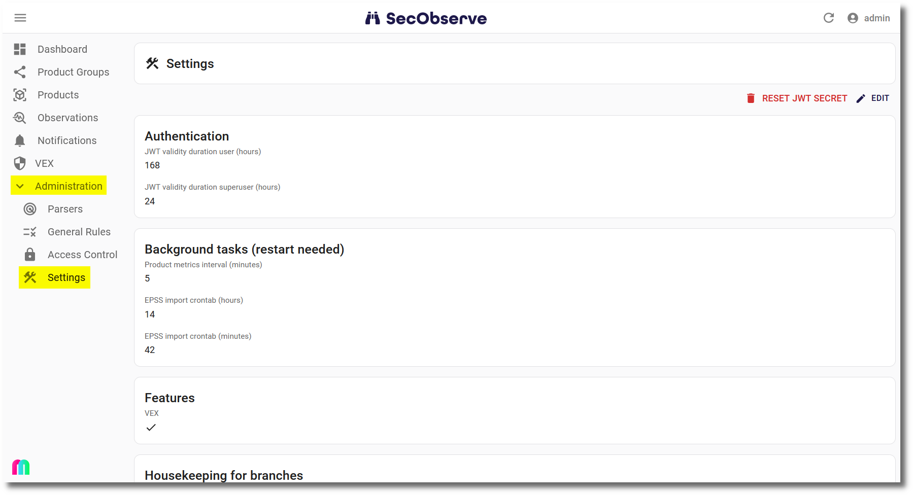

Configuration
Deployment
A part of the configuration is done with environment variables, which need to be set when deploying SecObserve. How this is done depends on the deployment method, see Installation.
Backend
| Environment variable | Optionality | Description |
|---|---|---|
ADMIN_USER |
mandatory | Username of the administration user. The user will be created at the fist start of the backend. |
ADMIN_EMAIL |
optional | E-Mail of the administration user. |
ADMIN_PASSWORD |
optional | Initial password of the admin user. If it is not set, a random password will be created during startup and shown in the log. |
ALLOWED_HOSTS |
mandatory | Hostnames of the backend, see Django settings ALLOWED_HOSTS. This can be a comma-separated list of hostnames. |
CORS_ALLOWED_ORIGINS |
mandatory | URL of the frontend that is authorized to make cross-site HTTP requests. This can be a comma-separated list of URLs. |
DATABASE_HOST |
mandatory | Which host to use when connecting to the database. |
DATABASE_DB |
mandatory | The name of the database to use. |
DATABASE_PORT |
mandatory | The port to use when connecting to the database. |
DATABASE_USER |
mandatory | The username to use when connecting to the database. |
DATABASE_PASSWORD |
mandatory | The password to use when connecting to the database. |
DATABASE_ENGINE |
mandatory | The database backend to use. Supported database backends are django.db.backends.mysql and django.db.backends.postgresql |
MYSQL_AZURE |
optional | Must be set if Azure Database for MySQL is used, to use the necessary SSL certificate. For MySQL Flexible Server it needs to have the value flexible, for MySQL Single Server the the value needs to be single. See Connect using mysql command-line client with TLS/SSL and Configure SSL connectivity in your application to securely connect to Azure Database for MySQL. |
DJANGO_SECRET_KEY |
mandatory | A secret key for a particular Django installation. This is used to provide cryptographic signing, and should be set to a unique, unpredictable value with at least 50 characters, see Django settings SECRET_KEY. |
FIELD_ENCRYPTION_KEY |
mandatory | Key to encrypt fields like the JWT secret. See Generating an Encryption Key how to generate the key. |
GUNICORN_WORKERS |
optional | Number of worker processes for the Gunicorn web server, see Gunicorn documentation. Default is 3. |
GUNICORN_THREADS |
optional | Number of worker threads for the Gunicorn web server, default is 10. |
GUNICORN_LIMIT_REQUEST_FIELD_SIZE |
optional | Limits the allowed size of an HTTP request header field, default is 16380. |
OIDC_AUTHORITY |
mandatory | The authority is a URL that hosts the OpenID configuration well-known endpoint. |
OIDC_CLIENT_ID |
mandatory | The client ID is the unique Application (client) ID assigned to your app by the OpenID Connect provider when the app was registered. |
OIDC_USERNAME |
mandatory | The claim that contains the username to find or create the user. |
OIDC_FIRST_NAME |
mandatory | The claim that contains the first name of the user. |
OIDC_LAST_NAME |
mandatory | The claim that contains the last name of the user. |
OIDC_FULL_NAME |
mandatory | The claim that contains the full name of the user. |
OIDC_EMAIL |
mandatory | The claim that contains the email address of the user. |
OIDC_GROUPS |
optional | The claim that contains the groups of the user. |
Frontend
| Environment variable | Optionality | Description |
|---|---|---|
API_BASE_URL |
mandatory | URL where to find the backend API, e.g. https:\\secobserve-backend.example.com/api. |
OIDC_ENABLE |
mandatory | true: OpenID Connect authentication is active, false: otherwise. |
OIDC_AUTHORITY |
mandatory | The authority is a URL that hosts the OpenID Connect configuration well-known endpoint. |
OIDC_CLIENT_ID |
mandatory | The client ID is the unique Application (client) ID assigned to your app by the OpenID Connect provider when the app was registered. |
OIDC_REDIRECT_URI |
mandatory | The redirect URI is the URI the identity provider will send the security tokens back to. To be set with the URL of the frontend. |
OIDC_POST_LOGOUT_REDIRECT_URI |
mandatory | The post logout redirect URI is the URI that will be called after logout. To be set with the URL of the frontend. |
OIDC_SCOPE |
optional | OpenID Connect (OIDC) scopes are used by an application during authentication to authorize access to a user's details, like name or email. If the variable is not set, the standard scopes openid profile email will be used. |
All the OIDC_* environment variables are needed for technical reasons. If OIDC_ENABLE is set to false, the other OIDC_* environment variables can be set to dummy or something similar.
More about the configuration for different OpenID Connect providers can be found in OpenID Connect authentication.
Admininistration in SecObserve
Other parts of the configuration are done in the administration interface of SecObserve under Settings, which can only be accessed by users with the role Superuser.

The entries shall be checked and adjusted if necessary after installing SecObserve.